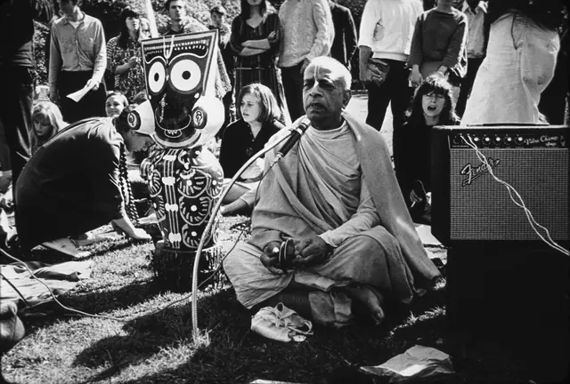
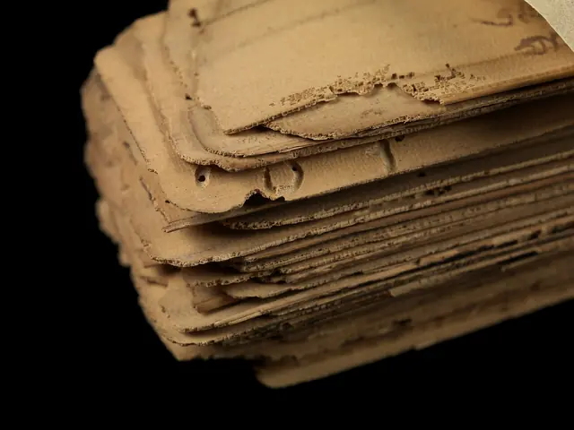
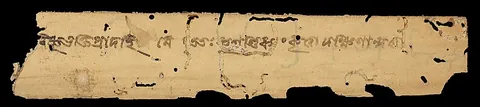
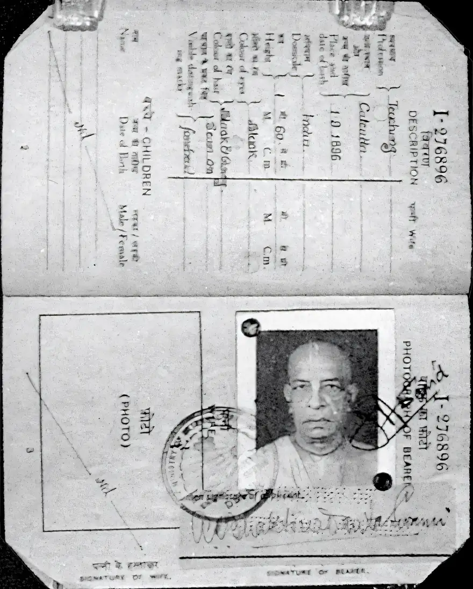

Plate 1
Passport, 1965
The photograph page of his first passport, used for the journey to the United States.
Photograph: Government of India, GODL-India, via Wikimedia Commons.
This object leads to Vanipedia: Founder-Ācārya document
Welcome to Vanipedia, a dynamic, living encyclopedia of Śrīla Prabhupāda's words (vani).
Enter Vanipedia
Plate 1
The photograph page of his first passport, used for the journey to the United States.
Photograph: Government of India, GODL-India, via Wikimedia Commons.
This object leads to Vanipedia: Founder-Ācārya document

Plate 2
Śrīla Prabhupāda in Golden Gate Park, San Francisco, with the Jagannātha deity beside him.
Photograph: Mukunda Goswami, CC BY-SA 3.0, via Wikimedia Commons.
This object leads to Vanimedia: Images
Plate 3
Walking at Red Square in front of St. Basil's Cathedral, on his first and only visit to the USSR.
Photograph: Śyāmasundara dāsa, CC BY-SA 3.0, via Wikimedia Commons.
This object leads to Vanisource: lectures, conversations, letters

Plate 4
On a morning walk with his disciples in Germany.
Photograph: Christian Jansen, CC BY 3.0, via Wikimedia Commons.
This object leads to Vanipedia: Nectar Drops

Plate 5
His room as it is kept today, with his mūrti. Here he worked on the Bhāgavatam before leaving for America.
Photograph: Aman Kumar, CC BY-SA 4.0, via Wikimedia Commons.
This object leads to Vanisource: his books


Plate 6
Palm-leaf manuscript in Sanskrit, Bengali script, Wellcome Collection. Not his own. Detail: one leaf.
Photographs: Wellcome Collection, CC BY 4.0, via Wikimedia Commons. Leaf cropped.
This object leads to Vaniquotes: his words by theme
He sailed for the United States on the Jaladuta in August 1965, carrying this passport.

The encyclopedia of Śrīla Prabhupāda's words.
His books, lectures, conversations and letters.
His words gathered by theme.
Audio, video and images.